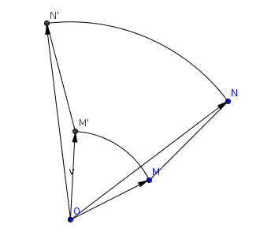

| Choisissez votre langue ! | Choose your language ! |
Déplacements du plan
Proper (positive) isometries of the plane
Il en résulte que par rapport à toute base orthonormale la détermination analytique d'un tel déplacement est :
\( \displaystyle \left\{ \begin{matrix} {x' = x_{0} + {ax} - {by}} \\ {y' = y_{0} + {bx} + {ay}} \\ \end{matrix} \right. \)
et que les nombres a et b, vérifiant a2+b2=1 sont indépendants du repère orthonormé particulier choisi pour la représentation analytique.Les points fixes sont donc solutions du système :
\( \displaystyle \left\{ \begin{matrix} {x = x_{0} + {ax} - {by}} \\ {y = y_{0} + {bx} + {ay}} \\ \end{matrix} \right. \)
qui peut encore s'écrire :\( \displaystyle \left\{ \begin{matrix} {\left( {1 - a} \right)x + {by} = x_{0}} \\ {- {bx} + \left( {1 - a} \right)y = y_{0}} \\ \end{matrix} \right. \)
et dont le déterminant est :\( \displaystyle \left| \begin{matrix} {1 - a} & b \\ {- b} & {1 - a} \\ \end{matrix} \right| = \left( {1 - a} \right)^{2} + b^{2} = 2\left( {1 - a} \right) \)
Deux cas peuvent alors se présenter.Cas a=1 :
alors forcément b=0 et le déterminant est nul dans ce cas la détermination analytique est :
\( \displaystyle \left\{ \begin{matrix} {x' = x + x_{0}} \\ {y' = y + y_{0}} \\ \end{matrix} \right. \)
et on reconnait une translation de vecteur \( \displaystyle \overrightarrow{u}\begin{pmatrix} x_{0} \\ y_{0} \\ \end{pmatrix} \)Cas a ≠ 1 :
Dans ce cas il y a un point fixe unique dont les coordonnées sont solutions du système de Cramer :
\( \displaystyle \left\{ \begin{matrix} {\left( {1 - a} \right)x + {by} = x_{0}} \\ {- {bx} + \left( {1 - a} \right)y = y_{0}} \\ \end{matrix} \right. \)
It follows that with respect to any orthonormal basis the analytical determination of such a displacement is:
\( \displaystyle \left\{ \begin{matrix} {x' = x_{0} + {ax} - {by}} \\ {y' = y_{0} + {bx} + {ay}} \\ \end{matrix} \right. \)
and that the numbers a and b satisfying a2+b2=1 are independent of the particular orthonormal frame chosen for the analytic representation.The fixed points are therefore solutions of the system:
\( \displaystyle \left\{ \begin{matrix} {x = x_{0} + {ax} - {by}} \\ {y = y_{0} + {bx} + {ay}} \\ \end{matrix} \right. \)
which can also be written:\( \displaystyle \left\{ \begin{matrix} {\left( {1 - a} \right)x + {by} = x_{0}} \\ {- {bx} + \left( {1 - a} \right)y = y_{0}} \\ \end{matrix} \right. \)
and whose determinant is:\( \displaystyle \left| \begin{matrix} {1 - a} & b \\ {-b} & {1 -a} \\ \end{matrix} \right| = \left( {1 - a} \right)^{2} + b^{2} = 2\left( {1 - a} \right) \)
Two cases can then arise.Case a=1:
then necessarily b=0 and the determinant is zero in this case the analytical determination is:
\( \displaystyle \left\{ \begin{matrix} {x' = x + x_{0}} \\ {y' = y + y_{0}} \\ \end{matrix} \right. \)
and we recognize a translation with vector \( \displaystyle \overrightarrow{u}\begin{pmatrix} x_{0} \\ y_{0} \\ \end{pmatrix} \)Case a ≠ 1:
In this case there is a single fixed point whose coordinates are solutions of the Cramer system:
\( \displaystyle \left\{ \begin{matrix} {\left( {1 - a} \right)x + {by} = x_{0}} \\ {- {bx} + \left( {1 - a} \right)y = y_{0}} \\ \end{matrix} \right. \)

Les rotations ont un point fixe unique (le centre).
Les translations n'ont aucun point fixe si le vecteur de translation n'est pas nul, dans le cas contraire tous les points sont fixes.
Rotations have a single fixed point (the center).
Translations have no fixed point if the translation vector is not zero, otherwise all points are fixed.
|
Création Gilles Dubois - licence CC-BY-SA
Created by Gilles Dubois - licence CC-BY-SA
|
Septembre 2023
September 2023
|
Version mobile Jquery
Mobile Jquery version
|
|